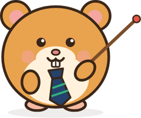

Seminararbeit-Profi
Seminararbeit bis zum 10.11.?
Keine Angst.
Ein Skill für dein Claude-Konto. Von der ersten Zeile bis zum Prüfungsgespräch.
Einmalig, kein Abo, inkl. MwSt. · Läuft im kostenlosen Claude
Du schickst
„Abgabe am 10.11. Check alles.“
Du bekommst
Endcheck mit Fundstellen und Plan bis zur Abgabe
- Fußnote 12: wörtliches Zitat, aber mit „Vgl.“
- „Müller 2021“ zitiert, fehlt im Literaturverzeichnis
- Kap. 3.2: „dramatisch“ ist eine Wertung außerhalb des Fazits
- Plagiats-Check gegen deine Quellen: keine ungekennzeichneten Übernahmen

Was drin ist
Schreiben. Prüfen. Belegen. Üben.
Vier Dinge, die vor der Abgabe Zeit kosten. Der Skill erledigt sie mit dir zusammen in Claude.
Von der Gliederung bis zum Fazit.
Kapitel für Kapitel, sachlich, mit Beleg nach jeder Aussage. Du entscheidest, was rein kommt.
Prüf-Werkzeuge
Formalia, Fußnoten, Literaturverzeichnis und mehr.
Übernahmen und KI-Floskeln finden.
Gegen deine eigenen Quellen geprüft. Ein Selbstcheck, keine Garantie.
Aus Screenshots wird ein PDF.
Mit Link und Abrufdatum, fertig zum Abgeben.
Neu in Bayern
Das Prüfungsgespräch übst du vorher.
Mit deiner eigenen Arbeit. Laut Kultusministerium wird dort auch gefragt, wie du KI genutzt hast.
- SpickzettelKernaussage, wichtige Zahlen und die Stellen, an denen nachgehakt wird.
- FragenkatalogAus deiner Arbeit erstellt, mit Antwort-Gerüst.
- Probe-PrüfungClaude fragt wie eine Lehrkraft und wertet dich danach aus.
LehrkraftAuf Seite 7 schreiben Sie, die Zahl der Touristen habe sich von 2010 bis 2018 mehr als vervierfacht. Woher wissen Sie das?
DuAnkünfte am Flughafen laut amtlicher Statistik, 2010 rund 0,5 Mio., 2018 2,3 Mio. Kreuzfahrtgäste fehlen.
✓ Quelle und Zahl sicher, Grenze genannt. Nächstes Mal mit der Kernaussage anfangen.
Zehn Modi
Egal, wo du gerade stehst.
Noch nicht angefangen oder fast fertig? Sag es Claude, er wählt den passenden Modus.
In drei Schritten startklar.
Einrichten geht am besten am Laptop und dauert etwa zwei Minuten.
- KaufenÜber Digistore24, der Download kommt sofort.
- HochladenIn Claude unter Anpassen → Skills die ZIP-Datei hochladen. Die Anleitung zeigt jeden Klick.
- LoslegenNeuer Chat, Word-Datei rein, „Abgabe am 10.11., hilf mir“.
Lieferumfang: Skill „Seminararbeit-Profi“ als ZIP-Datei und Anleitung als PDF, digital als Download, sofort nach dem Kauf. Kein Versand. Du brauchst ein eigenes Claude-Konto (kostenlos reicht; es gelten die Nutzungsbedingungen von Anthropic), die Einstellung „Dateien erstellen und bearbeiten“ und deine Arbeit als Word-Datei.
Fragen.
Ist das nicht Schummeln?
Viele Lehrkräfte erlauben KI, und laut Kultusministerium wird im Prüfungsgespräch auch gefragt, wie du KI genutzt hast. Der Skill fragt am Anfang nach der Regel deiner Lehrkraft und hält sich daran. Erklären musst du deine Arbeit am Ende selbst, genau dafür gibt es den Coach.
Klappt das mit dem kostenlosen Claude?
Ja. Weil die Nachrichten dort begrenzt sind, speichert Claude am Ende jeder Sitzung deinen Arbeitsstand. Den lädst du im nächsten Chat wieder hoch und machst weiter.
Mein Gespräch ist schon bald. Lohnt sich das noch?
Ja. Lade die abgegebene Arbeit hoch und starte direkt mit dem Coach.
Bekomme ich eine bessere Note garantiert?
Nein. Plagiats- und KI-Check sind Selbstchecks: Kein Werkzeug kann sicher beweisen, wer einen Text geschrieben hat. Die Note gibt deine Lehrkraft.
Kann ich den Kauf widerrufen?
Ja. Du hast 14 Tage Widerrufsrecht ab Kauf, nach der Widerrufsbelehrung von Digistore24 (dein Vertragspartner). Klappt beim Einrichten etwas nicht, schreib mir gern vorher, meist ist es schnell gelöst.

Bereit für den 10.11.
9,90 € · einmalig
Inkl. MwSt. · 14 Tage Widerrufsrecht · Vertragspartner und Zahlung: Digistore24